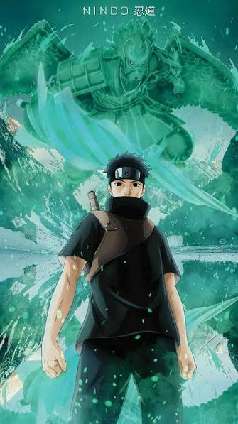

Shisui Uchiha was one of the most talented members of the Uchiha Clan and a close friend of Itachi Uchiha. Known as "Shisui of the Body Flicker," he possessed extraordinary speed and powerful genjutsu abilities. He wished to prevent conflict between the Uchiha Clan and Konohagakure and planned to use his Mangekyo Sharingan to maintain peace. Before his death, he entrusted one of his eyes to Itachi.
Shisui dreamed of protecting both the Uchiha Clan and Konohagakure. He wanted to achieve peace without bloodshed and prevent a civil war within the village.
"Protect the village and the Uchiha name... no matter what."